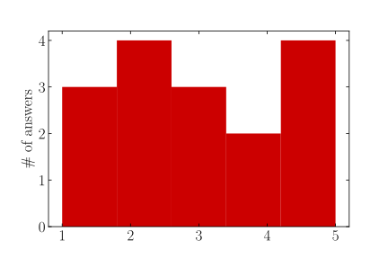
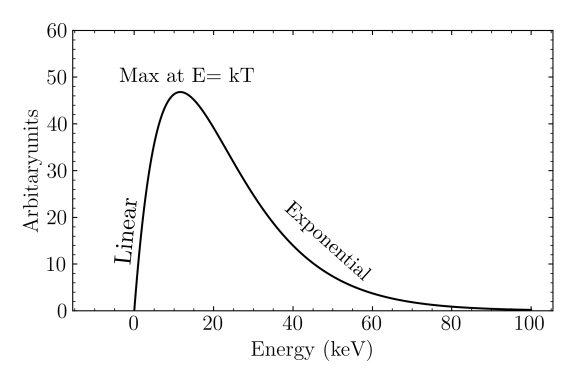
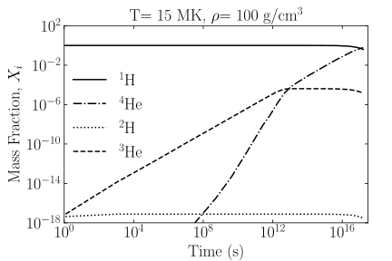
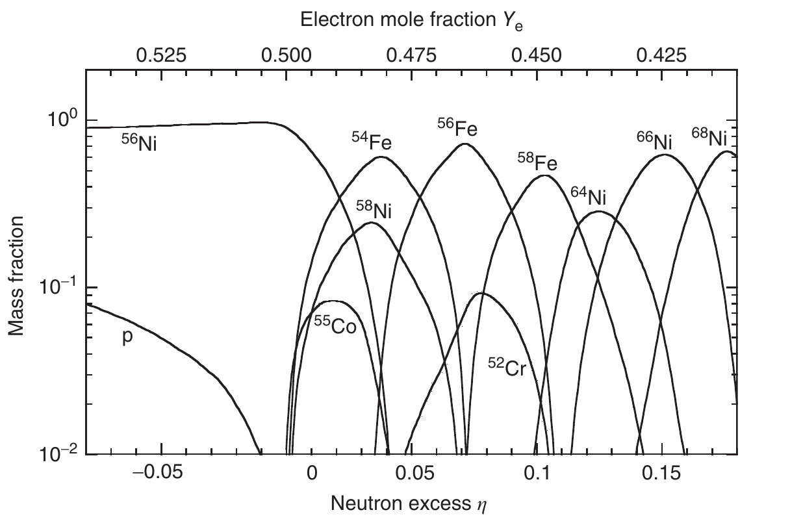
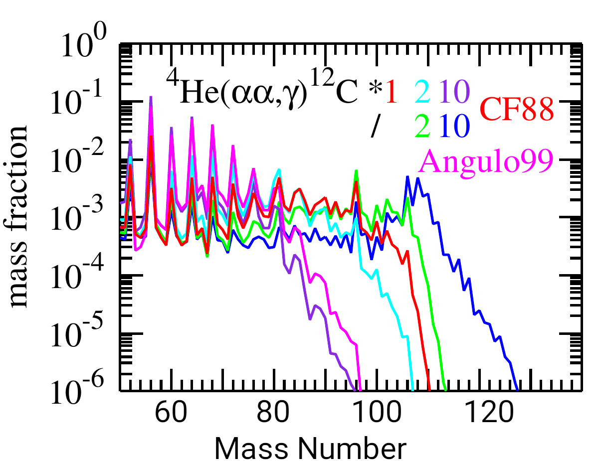

An introduction to
thermonuclear reaction networks
Thanassis Psaltis (@psaltistha)
North Carolina State University & Triangle Universities Nuclear Laboratory
May 16, 2023
2nd Frontiers Summer School
Happy to see you! 😁
What do I do?
"I use big machines and computers to study how stars that blow up
in space create the stuff we are made of."
Brought to you by: https://xkcd.com/simplewriter/
Why listen to me?
I have used many reaction network codes for thousands of hours.
How did I end up here?
🇬🇷→🇨🇦 → 🇩🇪 → 🇺🇸 → 🤷♂
What are my hobbies?
♟ 📚 🏃♂ 🎮 ️ 🍪
From a scale 1-5 my experience with thermonuclear reaction networks is...
🫠
Topics we will cover
Thermonuclear reaction rates
Forming the network
Solving the network
Sensitivity studies using reaction networks
Lecture notes and slides available at

http://psaltisa.github.io/teaching/reaction-networks
Thermouclear reaction networks


are an essential tool for nuclear astrophysics
C. Jiang et al., New J. Phys. 23, 083035 (2021)
Thermonuclear reaction networks are
an essential tool for you!
Understand how stars
live and die
Understand the origin of the elements
A thermonuclear reaction network is a system of first-order coupled differential equations, which describes the abundance evolution and energy generation, and depends only on the nuclear reaction rates and the local thermodynamical conditions.
Thermonuclear reaction rates
C. Iliadis, "Nuclear Physics of Stars", 2nd edition
(2017)
R. Longland et al., Nucl. Phys. A 841, 1 (2010)
Why does the Sun shine?
Four protons are converted to one $\alpha$-particle
$\sim 27\ \mathrm{MeV}$ of energy is released
Thermonuclear Reaction Rate
Number of reactions per unit volume and time
\begin{aligned} r_{ab} &= \underbrace{n_a n_b}_{\text{number densities}} \langle \sigma v \rangle_{ab} \\ &= \color{#CC0000}{n_a n_b} \int \sigma(v)~P(v)~v~dv \end{aligned}
Reactions are initiated from their thermal motion → thermonuclear
Number density, abundance and mass fraction
\[ n_i = \frac{\rho N_A X_i}{A_i} = \rho N_A Y_i \]
$X_i$, mass fraction • $\sum_i X_i =1$
$Y_i$, abundance • $\sum_i A_i Y_i =1$
Thermonuclear Reaction Rate
Number of reactions per unit volume and time
\begin{aligned} r_{ab} &= \underbrace{n_a n_b}_{\text{number densities}} \langle \sigma v \rangle_{ab} \\ &= n_a n_b \int \sigma(v)~\color{#CC0000}{P(v)~v~dv} \end{aligned}
Reactions are initiated from their thermal motion → thermonuclear
Velocity (energy) distribution in a stellar gas
Maxwell-Boltzmann: $ \phi(E) \propto e^{-E/kT} \sqrt{E} $
Thermonuclear reaction rate
\[ \langle \sigma v \rangle = \left( \frac{8}{\pi \mu}\right)^{1/2} (kT)^{-3/2} \int_0^\infty \color{#CC0000}{\sigma(E)}~E~e^{-E/kT} dE \]
We only need an expression of $\sigma(E)$ to evaluate it.
Hauser-Feshbach model (G. Perdikakis) • reaction mechanisms (G. Potel)...
Forming the network
D. Arnett, "Supernovae and nucleosynthesis" (1996)
W.R. Hix and F. Thielemann, J. Comput. Appl. Math. 109, 321 (1999)
W.R. Hix and B.S. Meyer, Nucl. Phys. A 777, 188 (2006)
How do abundances evolve?
Decays
\[ a \rightarrow b \] \[ \frac{dY_a}{dt} = \color{#CC0000}{\mathbf{-}} \lambda_a Y_a \] \[ \frac{dY_b}{dt} = \color{#CC0000}{\mathbf{+}} \lambda_a Y_a \]Capture reactions
\[ a + b \rightarrow c+ \gamma \] \[ \frac{dY_{a,b}}{dt} = \color{#CC0000}{\mathbf{-}}\rho N_A Y_a Y_b \langle \sigma v \rangle_{ab} \] \[ \frac{dY_c}{dt} = \color{#CC0000}{\mathbf{+}} \rho N_A Y_a Y_b \langle \sigma v \rangle_{ab} \]The rate equations: protons
destroyed by $p(p,e^+\nu)d$ and $d(p,\gamma)\mathrm{^{3}He}$
produced by the $\mathrm{^3He(^3He, 2p)^4He}$
Can you write the rate equations for $d$, $\mathrm{^3He}$ and $\alpha$?
The three reactions: $p(p,e^+\nu)d$, $d(p,\gamma)\mathrm{^{3}He}$ & $\mathrm{^3He(^3He, 2p)^4He}$
The rate equations: pp-chain
The rate equations
$$ \begin{aligned} \frac{dY_i}{dt} &= \underbrace{\sum_j N_i \lambda_j Y_j}_{\text{decays}} \\ &+\underbrace{\sum_{j,k} \frac{N_i}{N_j! N_k!} \rho N_A \langle \sigma v \rangle_{jk} Y_j Y_k}_{\text{2-body reactions}} \\ &+ \underbrace{\sum_{j,k,l} \frac{N_i}{N_j! N_k! N_l!} (\rho N_A)^2 \langle \sigma v \rangle_{jkl} Y_j Y_k Y_l}_{\text{3-body reactions}} \end{aligned} $$The rate equations
More generally:
\[ \dot{\mathbf{y}} = f(\mathbf{y,t}) \]
$\mathbf{y}$ is the vector that contains all the abundances $Y_i$ at time $t$ - $\mathbf{y}=[Y_1, Y_2,\ldots Y_{i_{max}}]_t$
The network ingredients
Nuclear Physics
Reaction rates $N_A \langle \sigma v \rangle$ (Reaclib, STARLIB,...), reaction Q-values, half-lifes, fission fragment distributions, partition functions, ...
Astrophysics
Time evolution of the temperature, $T(t)$ and density $\rho(t)$, and sometimes the electron mole fraction ($Y_e$). The initial composition of the environment ($Y_i$). "Tracer particles" and parametric profiles.
Uncertainties in the nuclear and astrophysics input will affect the abundances!
Solving the network
F. Timmes, Astrophys. J., Suppl. Ser. 124, 241
(1999)
R. Longland, D. Martin and J. José, A&A 563, A67 (2014)
Our goal is to
solve
$$
\dot{\mathbf{y}} = f(\mathbf{y, t})
$$
Integration methods: implicit vs explicit
\begin{equation} \mathbf{\dot{y}_n} = \frac{\mathbf{y_{n+1}} - \mathbf{y_n}}{h} = (1-\Theta) \mathbf{\dot{y}_{n+1}} + \Theta \mathbf{\dot{y}_n} \end{equation}
$\mathbf{y_n}, \mathbf{y_{n+1}}$ are the abundance vectors in time $t_n$
and $t_{n+1}$
$h$ is the integration time-step.
It all depends on the $\Theta$...
Integration methods: implicit vs explicit
$$ \frac{\mathbf{y_{n+1}} - \mathbf{y_n}}{h} = \begin{cases} \mathbf{\dot{y}_n} & \Theta=1,~\text{explicit forward Euler} \\ \frac{1}{2}[\mathbf{\dot{y}_{n+1}} + \mathbf{\dot{y}_n}] & \Theta= 1/2,~\text{semi-implicit trapezoidal} \\ \mathbf{\dot{y}_{n+1}} & \Theta=0,~\text{implicit backwards} \end{cases} $$
Explicit methods 😭
Implicit/semi-implicit methods 😁
Implicit/semi-implicit integration methods
"Wagoner's method" (implicit)
Bader-Deuflehard method (semi-implicit)
Gear's method (implicit)
R. Longland et al., A&A 563, A67 (2014) compares the performance of these methods for thermonuclear reaction networks.
The solution: enter the Jacobian
$$ \frac{\mathbf{y_{n+1}} - \mathbf{y_n}}{h} = \mathbf{\dot{y}_{n+1}} $$ $$ \mathbf{y_{n+1}} = \mathbf{y_n} + h f(t_{n+1}, \mathbf{y}, \ldots) $$
$$
[\mathbf{I}- h \mathbf{J}]\mathbf{y_{n+1}} = \mathbf{y_n}
$$
$\mathbf{I}$ is the unitary matrix
$\mathbf{J} \equiv \partial
f/\partial \mathbf{y}$ is the Jacobian matrix
The Jacobian matrix
$$ \mathbf{J}(Y_1, \ldots, Y_{i_{max}})= \begin{vmatrix} \frac{\partial \dot{Y_1}}{\partial Y_1} & \ldots & \frac{\partial \dot{Y_1}}{\partial Y_{i_{max}}} \\ \vdots & \ddots & \vdots \\ \frac{\partial \dot{Y_{i_{max}}}}{\partial Y_1} & \ldots & \frac{\partial \dot{Y_{i_{max}}}}{\partial Y_{i_{max}}}\end{vmatrix} $$
Can you write the Jacobian matrix for the pp-chain?
The four nuclei: $p,d,\mathrm{^3He},\alpha$
The three reactions: $p(p,e^+\nu)d$, $d(p,\gamma)\mathrm{^{3}He}$ & $\mathrm{^3He(^3He, 2p)^4He}$
The Jacobian matrix: pp-chain
$$ \mathbf{J}= \begin{vmatrix} -2Y_p R_{pp} - Y_d R_{pd} & - Y_p R_{dp} & 2 Y_{\mathrm{^3He}} R_{\mathrm{^3He^3He}} & 0 \\ Y_p R_{pp} - Y_d R_{dp} & -Y_p R_{dp} & 0 & 0 \\ Y_d R_{dp} & Y_p R_{dp} & -2Y_{\mathrm{^3He}}R_{\mathrm{^3He^3He}} & 0 \\ 0 & 0 & Y_{\mathrm{^3He}} R_{\mathrm{^3He ^3He}} & 0 \end{vmatrix} $$
The Jacobian matrix

White space indicates zero elements of the Jacobian! (sparse)
The evolution of the pp-chain abundances
Equilibrium
$$ \frac{dY_d}{dt} = 0 $$ $$ \rho N_A \frac{Y_p^2}{2} \langle \sigma v \rangle_{pp} - \rho N_A Y_d Y_p \langle \sigma v \rangle_{dp} = 0 $$ $$ \frac{Y_d}{Y_p} = \frac{\langle \sigma v \rangle_{pp}}{2\langle \sigma v \rangle_{dp}} $$
For our conditions, the equilibrium is established in around one minute!
Nuclear Statistical Equilibrium (NSE)
Occurs in high temperatures ($\mathrm{T > 3 \times 10^9 K}$), where all reactions are in equilibrium via strong and electromagnetic interactions.
 The abundances are determined by the properties of the gas and not by reactions rates!Energy Generation
\begin{equation} \epsilon= - \sum_i N_A m_i c^2 \frac{dY_i}{dt}-\frac{d\epsilon_\nu}{dt}~\text{(MeV/g s}) \end{equation}
$m_i c^2$ is the rest mass energy of species $i$ in MeV
$d\epsilon_\nu/dt$ are the neutrino losses
More examples using WebNucleo during the hands-on session!
Sensitivity studies using reaction networks
C. Iliadis et al., Astrophys. J
Suppl. Ser. 142, 105 (2002)
T. Rauscher et al., Mon. Not. Roy. Astron. Soc. 463,
4153 (2016)
and many more!
How do we identify reactions
whose rate uncertainties
affect
nucleosynthesis processes?
Sensitivity studies motivate experiments
Same model, but different nuclear input!
Monte Carlo Studies


Same model, but change all $(\alpha,n)$ rates
Take-home message
Nuclear reaction networks are an indispensable tool for a nuclear astrophysicist. Learn how it works and use it to your advantage!
Questions
Lecture notes and slides available at
http://psaltisa.github.io/teaching/reaction-networks